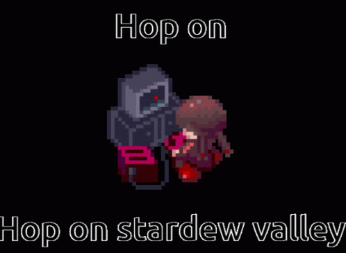

Stardew Valley is a popular farming simulation RPG where players grow crops, raise animals, forge relationships, and explore mines in a charming pixel-art world. The game offers a relaxing yet engaging experience with countless ways to customize and play. Stardew Valley also offers multiplayer mode which allows players to complete the game with a friend or through local split-screen.

As of December 2024, Stardew Valley has sold over 41 million copies across all platforms, making it the 15th best-selling game of all time, including 26 million on PC and 7.9 million on the Nintendo Switch. Remarkably, it added 11 million sales in just 10 months, boosted by its expansive 1.6 update in March, which introduced new content, bug fixes, and gameplay enhancements.
Nexus Mods is the go-to platform for installing mods for Stardew Valley, offering a wide variety of options to enhance your gameplay. If you're looking for a free modded expansion, consider Stardew Valley Expanded or Ridgeside Village, which add new areas, characters, and events to the game. Remember to regularly check for mod updates to ensure compatibility and smooth gameplay.
ConcernedApe, the creator of Stardew Valley, is now working on Haunted Chocolatier, his next project that blends whimsical charm with a fresh gameplay concept. For more information, visit ConcernedApe's blog.